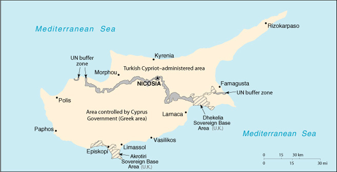

|
Cyprus | |
| Introduction Geography People Government Economy Communications Transportation Military Transnational Issues | ||
|  | ||
| Cyprus | Introduction | Top of Page |
| Background: | Independence from the UK was approved in 1960 with constitutional guarantees by the Greek Cypriot majority to the Turkish Cypriot minority. In 1974, a Greek-sponsored attempt to seize the government was met by military intervention from Turkey, which soon controlled almost 40% of the island. In 1983, the Turkish-held area declared itself the "Turkish Republic of Northern Cyprus", but it is recognized only by Turkey. UN-led talks on the status of Cyprus resumed in December 1999 to prepare the ground for meaningful negotiations leading to a comprehensive settlement. |
| Cyprus | Geography | Top of Page |
| Location: | Middle East, island in the Mediterranean Sea, south of Turkey |
| Geographic coordinates: | 35 00 N, 33 00 E |
| Map references: | Middle East |
| Area: |
total:
9,250 sq km (of which 3,355 sq km are in the Turkish Cypriot area)
land: 9,240 sq km water: 10 sq km |
| Area - comparative: | about 0.6 times the size of Connecticut |
| Land boundaries: | 0 km |
| Coastline: | 648 km |
| Maritime claims: |
continental shelf:
200-m depth or to the depth of exploitation
territorial sea: 12 NM |
| Climate: | temperate, Mediterranean with hot, dry summers and cool, winters |
| Terrain: | central plain with mountains to north and south; scattered but significant plains along southern coast |
| Elevation extremes: |
lowest point:
Mediterranean Sea 0 m
highest point: Olympus 1,951 m |
| Natural resources: | copper, pyrites, asbestos, gypsum, timber, salt, marble, clay earth pigment |
| Land use: |
arable land:
12%
permanent crops: 5% permanent pastures: 0% forests and woodland: 13% other: 70% (1993 est.) |
| Irrigated land: | 390 sq km (1993 est.) |
| Natural hazards: | moderate earthquake activity; droughts |
| Environment - current issues: | water resource problems (no natural reservoir catchments, seasonal disparity in rainfall, sea water intrusion to island's largest aquifer, increased salination in the north); water pollution from sewage and industrial wastes; coastal degradation; loss of wildlife habitats from urbanization |
| Environment - international agreements: |
party to:
Air Pollution, Biodiversity, Climate Change, Climate Change-Kyoto Protocol, Desertification, Endangered Species, Environmental Modification, Hazardous Wastes, Law of the Sea, Marine Dumping, Nuclear Test Ban, Ozone Layer Protection, Ship Pollution
signed, but not ratified: Air Pollution-Persistent Organic Pollutants |
| Cyprus | People | Top of Page |
| Population: | 762,887 (July 2001 est.) |
| Age structure: |
0-14 years:
22.95% (male 89,532; female 85,518)
15-64 years: 66.26% (male 255,368; female 250,140) 65 years and over: 10.79% (male 35,864; female 46,465) (2001 est.) |
| Population growth rate: | 0.59% (2001 est.) |
| Birth rate: | 13.08 births/1,000 population (2001 est.) |
| Death rate: | 7.65 deaths/1,000 population (2001 est.) |
| Net migration rate: | 0.44 migrant(s)/1,000 population (2001 est.) |
| Sex ratio: |
at birth:
1.05 male(s)/female
under 15 years: 1.05 male(s)/female 15-64 years: 1.02 male(s)/female 65 years and over: 0.77 male(s)/female total population: 1 male(s)/female (2001 est.) |
| Infant mortality rate: | 7.89 deaths/1,000 live births (2001 est.) |
| Life expectancy at birth: |
total population:
76.89 years
male: 74.6 years female: 79.3 years (2001 est.) |
| Total fertility rate: | 1.93 children born/woman (2001 est.) |
| HIV/AIDS - adult prevalence rate: | 0.1% (1999 est.) |
| HIV/AIDS - people living with HIV/AIDS: | 400 (1999 est.) |
| HIV/AIDS - deaths: | NA |
| Nationality: |
noun:
Cypriot(s)
adjective: Cypriot |
| Ethnic groups: | Greek 78% (99.5% of the Greeks live in the Greek Cypriot area; 0.5% of the Greeks live in the Turkish Cypriot area), Turkish 18% (1.3% of the Turks live in the Greek Cypriot area; 98.7% of the Turks live in the Turkish Cypriot area), other 4% (99.2% of the other ethnic groups live in the Greek Cypriot area; 0.8% of the other ethnic groups live in the Turkish Cypriot area) |
| Religions: | Greek Orthodox 78%, Muslim 18%, Maronite, Armenian Apostolic, and other 4% |
| Languages: | Greek, Turkish, English |
| Literacy: |
definition:
age 15 and over can read and write
total population: 94% male: 98% female: 91% (1987 est.) |
| Cyprus | Government | Top of Page |
| Country name: |
conventional long form:
Republic of Cyprus
conventional short form: Cyprus note: the Turkish Cypriot area refers to itself as the "Turkish Republic of Northern Cyprus" (TRNC) |
| Government type: |
republic
note: a disaggregation of the two ethnic communities inhabiting the island began following the outbreak of communal strife in 1963; this separation was further solidified after the Turkish intervention in July 1974 after a Greek junta-based coup attempt gave the Turkish Cypriots de facto control in the north; Greek Cypriots control the only internationally recognized government; on 15 November 1983 Turkish Cypriot "President" Rauf DENKTASH declared independence and the formation of a "Turkish Republic of Northern Cyprus" (TRNC), recognized only by Turkey; both sides publicly support a settlement based on a federation (Greek Cypriot position) or confederation (Turkish Cypriot position) |
| Capital: | Nicosia |
| Administrative divisions: | 6 districts; Famagusta, Kyrenia, Larnaca, Limassol, Nicosia, Paphos; note - Turkish Cypriot area's administrative divisions include Kyrenia, all but a small part of Famagusta, and small parts of Lefkosa (Nicosia) and Larnaca |
| Independence: | 16 August 1960 (from UK); note - Turkish Cypriot area proclaimed self-rule on 13 February 1975 |
| National holiday: | Independence Day, 1 October (1960); note - Turkish Cypriot area celebrates 15 November (1983) as Independence Day |
| Constitution: | 16 August 1960; negotiations to create the basis for a new or revised constitution to govern the island and to better relations between Greek and Turkish Cypriots have been held intermittently; in 1975 Turkish Cypriots created their own constitution and governing bodies within the "Turkish Federated State of Cyprus," which was renamed the "Turkish Republic of Northern Cyprus" in 1983; a new constitution for the Turkish Cypriot area passed by referendum on 5 May 1985 |
| Legal system: | based on common law, with civil law modifications |
| Suffrage: | 18 years of age; universal |
| Executive branch: |
chief of state:
President Glafcos CLERIDES (since 28 February 1993); note - the president is both the chief of state and head of government; post of vice president is currently vacant; under the 1960 constitution, the post is reserved for a Turkish Cypriot
head of government: President Glafcos CLERIDES (since 28 February 1993); note - the president is both the chief of state and head of government; post of vice president is currently vacant; under the 1960 constitution, the post is reserved for a Turkish Cypriot cabinet: Council of Ministers appointed jointly by the president and vice president elections: president elected by popular vote for a five-year term; election last held 15 February 1998 (next to be held NA February 2003) election results: Glafcos CLERIDES reelected president; percent of vote - Glafcos CLERIDES 50.8%, George IAKOVOU 49.2% note: Rauf R. DENKTASH has been "president" of the Turkish Cypriot area since 13 February 1975 ("president" elected by popular vote for a five-year term); elections last held 15 April 2000 (next to be held NA April 2005); results - Rauf R. DENKTASH reelected president after the other contender withdrew; Dervis EROGLU has been "prime minister" of the Turkish Cypriot area since 16 August 1996; there is a Council of Ministers (cabinet) in the Turkish Cypriot area |
| Legislative branch: |
unicameral - Greek Cypriot area: House of Representatives or Vouli Antiprosopon (80 seats; 56 assigned to the Greek Cypriots, 24 to Turkish Cypriots; note - only those assigned to Greek Cypriots are filled; members are elected by popular vote to serve five-year terms); Turkish Cypriot area: Assembly of the Republic or Cumhuriyet Meclisi (50 seats; members are elected by popular vote to serve five-year terms)
elections: Greek Cypriot area: last held 27 May 2001 (next to be held NA May 2006); Turkish Cypriot area: last held 6 December 1998 (next to be held NA December 2003) election results: Greek Cypriot area: House of Representatives - percent of vote by party - NA%; seats by party - AKEL (Communist) 20, DISY 19, DIKO 9, KISOS 4, others 4; Turkish Cypriot area: Assembly of the Republic - percent of vote by party - UBP 40.3%, DP 22.6%, TKP 15.4%, CTP 13.4%, UDP 4.6%, YBH 2.5%, BP 1.2%; seats by party - UBP 24, DP 13, TKP 7, CTP 6 |
| Judicial branch: |
Supreme Court (judges are appointed by the Supreme Council of Judicature)
note: there is also a Supreme Court in the Turkish Cypriot area |
| Political parties and leaders: | Greek Cypriot area: Democratic Party or DIKO [Tassos PAPADOPOULOS]; Democratic Rally or DISY [Nikos ANASTASIADHIS]; Restorative Party of the Working People or AKEL (Communist Party) [Dimitrios CHRISTOFIAS]; Social Democrats Movement or KISOS (formerly United Democratic Union of Cyprus or EDEK) [Vassos LYSSARIDIS]; United Democrats Movement or EDE (formerly Free Democrats Movement or KED) [George VASSILIOU]; Turkish Cypriot area: Communal Liberation Party or TKP [Mustafa AKINCI]; Democratic Party or DP [Salih COSAR]; National Birth Party or UDP [Enver EMIN]; National Unity Party or UBP [Dervis EROGLU]; Our Party or BP [Okyay SADIKOGLU]; Patriotic Unity Movement or YBH [Izzet IZCAN]; Republican Turkish Party or CTP [Mehmet ALI TALAT] |
| Political pressure groups and leaders: | Confederation of Cypriot Workers or SEK (pro-West); Confederation of Revolutionary Labor Unions or Dev-Is; Federation of Turkish Cypriot Labor Unions or Turk-Sen; Pan-Cyprian Labor Federation or PEO (Communist controlled) |
| International organization participation: | Australia Group, C, CCC, CE, EBRD, ECE, EU (applicant), FAO, G-77, IAEA, IBRD, ICAO, ICC, ICFTU, IDA, IFAD, IFC, IFRCS (associate), IHO, ILO, IMF, IMO, Inmarsat, Intelsat, Interpol, IOC, IOM, ISO, ITU, NAM, NSG, OAS (observer), OPCW, OSCE, PCA, UN, UNCTAD, UNESCO, UNIDO, UPU, WCL, WFTU, WHO, WIPO, WMO, WToO, WTrO |
| Diplomatic representation in the US: |
chief of mission:
Ambassador Erato KOZAKOU-MARCOULLIS
chancery: 2211 R Street NW, Washington, DC 20008 telephone: [1] (202) 462-5772 FAX: [1] (202) 483-6710 consulate(s) general: New York note: representative of the Turkish Cypriot area in the US is Ahmet ERDENGIZ; office at 1667 K Street NW, Washington, DC; telephone [1] (202) 887-6198 |
| Diplomatic representation from the US: |
chief of mission:
Ambassador Donald K. BANDLER
embassy: corner of Metochiou and Ploutarchou Streets, Engomi, 2407 Nicosia mailing address: P. O. Box 4536, FPO AE 09836 telephone: [357] (2) 776400 FAX: [357] (2) 780944 |
| Flag description: |
white with a copper-colored silhouette of the island (the name Cyprus is derived from the Greek word for copper) above two green crossed olive branches in the center of the flag; the branches symbolize the hope for peace and reconciliation between the Greek and Turkish communities
note: the Turkish Cypriot flag has a horizontal red stripe at the top and bottom between which is a red crescent and red star on a white field |
| Cyprus | Economy | Top of Page |
| Economy - overview: | Economic affairs are affected by the division of the country. The Greek Cypriot economy is prosperous but highly susceptible to external shocks. Erratic growth rates in the 1990s reflect the economy's vulnerability to swings in tourist arrivals, caused by political instability on the island and fluctuations in economic conditions in Western Europe. Economic policy is focused on meeting the criteria for admission to the EU. As in the Turkish sector, water shortage is a growing problem, and several desalination plants are planned. The Turkish Cypriot economy has about one-fifth the population and one-third the per capita GDP of the south. Because it is recognized only by Turkey, it has had much difficulty arranging foreign financing, and foreign firms have hesitated to invest there. It remains heavily dependent on agriculture and government service, which together employ about half of the work force. Moreover, the small, vulnerable economy has suffered because the Turkish lira is legal tender. To compensate for the economy's weakness, Turkey provides direct and indirect aid to tourism, education, industry, etc. |
| GDP: | Greek Cypriot area: purchasing power parity - $9.7 billion (2000 est.); Turkish Cypriot area: purchasing power parity - $830 million (1999 est.) |
| GDP - real growth rate: | Greek Cypriot area: 4.2% (2000 est.); Turkish Cypriot area: 4.9% (1999 est.) |
| GDP - per capita: | Greek Cypriot area: purchasing power parity - $16,000 (2000 est.); Turkish Cypriot area: purchasing power parity - $5,300 (1999 est.) |
| GDP - composition by sector: | Greek Cypriot area: agriculture 6.3%, industry 22.4%, services 71.3% (1998); Turkish Cypriot area: agriculture 11.8%, industry 20.5%, services 67.7% (1998) |
| Population below poverty line: | NA% |
| Household income or consumption by percentage share: |
lowest 10%:
NA%
highest 10%: NA% |
| Inflation rate (consumer prices): | Greek Cypriot area: 4.2% (2000 est.); Turkish Cypriot area: 58% (1999 est.) |
| Labor force: | Greek Cypriot area: 291,000; Turkish Cypriot area: 86,300 (2000) |
| Labor force - by occupation: | Greek Cypriot area: services 73%, industry 22%, agriculture 5% (2000); Turkish Cypriot area: services 56.4%, industry 22.8%, agriculture 20.8% (1998) |
| Unemployment rate: | Greek Cypriot area: 3.6% (2000 est.); Turkish Cypriot area: 6% (1998 est.) |
| Budget: |
revenues:
Greek Cypriot area - $2.9 billion (2000 est.); Turkish Cypriot area - $294 million (2000 est.)
expenditures: Greek Cypriot area - $3.2 billion, including capital expenditures of $324 million (2000 est.); Turkish Cypriot $495 million, including capital expenditures of $60 million (2000 est.) |
| Industries: | food, beverages, textiles, chemicals, metal products, tourism, wood products |
| Industrial production growth rate: | Greek Cypriot area: 2.2% (1999); Turkish Cypriot area: -0.3% (1999) |
| Electricity - production: | 2.951 billion kWh (1999); Turkish Cypriot area: NA kWh |
| Electricity - production by source: |
fossil fuel:
100%
hydro: 0% nuclear: 0% other: 0% (1999) |
| Electricity - consumption: | 2.744 billion kWh (1999); Turkish Cypriot area: NA kWh |
| Electricity - exports: | 0 kWh (1999) |
| Electricity - imports: | 0 kWh (1999) |
| Agriculture - products: | potatoes, citrus, vegetables, barley, grapes, olives, vegetables |
| Exports: | Greek Cypriot area: $1 billion (f.o.b., 1999 est.); Turkish Cypriot area: $51.1 million (f.o.b., 1999) |
| Exports - commodities: | Greek Cypriot area: citrus, potatoes, grapes, wine, cement, clothing and shoes; Turkish Cypriot area: citrus, potatoes, textiles |
| Exports - partners: | Greek Cypriot area: UK 17.3%, Greece 9.7%, Russia 7.0%, Lebanon 5.2% (1999); Turkish Cypriot area: Turkey 51%, UK 31%, other EU 16.5% (1999) |
| Imports: | Greek Cypriot area: $3.6 billion (f.o.b., 1999 est.); Turkish Cypriot area: $402 million (f.o.b., 1999) |
| Imports - commodities: | Greek Cypriot area: consumer goods, petroleum and lubricants, food and feed grains, machinery; Turkish Cypriot area: food, minerals, chemicals, machinery |
| Imports - partners: | Greek Cypriot area: UK 11.2%, US 10.6%, Italy 8.8%, Greece 8.2%, Germany 6.7% (1999); Turkish Cypriot area: Turkey 58.6%, UK 12.5%, other EU 13% (1999) |
| Debt - external: | Greek Cypriot area: $NA; Turkish Cypriot area: $NA |
| Economic aid - recipient: | Greek Cypriot area - $17 million (1998); Turkish Cypriot area - $700 million from Turkey in grants and loans (1990-97) that are usually forgiven |
| Currency: | Greek Cypriot area: Cypriot pound (CYP); Turkish Cypriot area: Turkish lira (TRL) |
| Currency code: | CYP; TRL |
| Exchange rates: | Cypriot pounds per US dollar - 0.6146 (January 2001), 0.6208 (2000), 0.5423 (1999), 0.5170 (1998), 0.5135 (1997), 0.4663 (1996); Turkish liras per US dollar - 677,621 (December 2000), 625,219 (2000), 418,783 (1999), 260,724 (1998), 151,865 (1997), 81,405 (1996) |
| Fiscal year: | calendar year |
| Cyprus | Communications | Top of Page |
| Telephones - main lines in use: | Greek Cypriot area: 405,000 (1998); Turkish Cypriot area: 83,162 (1998) |
| Telephones - mobile cellular: | Greek Cypriot area: 68,000 (1998); Turkish Cypriot area: 70,000 (1999) |
| Telephone system: |
general assessment:
excellent in both the Greek Cypriot and Turkish Cypriot areas
domestic: open wire, fiber-optic cable, and microwave radio relay international: tropospheric scatter; 3 coaxial and 5 fiber-optic submarine cables; satellite earth stations - 3 Intelsat (1 Atlantic Ocean and 2 Indian Ocean), 2 Eutelsat, 2 Intersputnik, and 1 Arabsat |
| Radio broadcast stations: | Greek Cypriot area: AM 7, FM 60, shortwave 1 (1998); Turkish Cypriot area: AM 3, FM 11, shortwave 1 (1998) |
| Radios: | Greek Cypriot area: 310,000 (1997); Turkish Cypriot area: 56,450 (1994) |
| Television broadcast stations: | Greek Cypriot area: 4 (plus 225 low-power repeaters) (September 1995); Turkish Cypriot area: 4 (plus 5 repeaters) (September 1995) |
| Televisions: | Greek Cypriot area: 248,000 (1997); Turkish Cypriot area: 52,300 (1994) |
| Internet country code: | .cy |
| Internet Service Providers (ISPs): | 6 (2000) |
| Internet users: | 80,000 (2000) |
| Cyprus | Transportation | Top of Page |
| Railways: | 0 km |
| Highways: |
total:
Greek Cypriot area: 10,663 km (1998 est.); Turkish Cypriot area: 2,350 km (1996 est.)
paved: Greek Cypriot area: 6,249 km (1998 est.); Turkish Cypriot area: 1,370 km (1996 est.) unpaved: Greek Cypriot area: 4,414 km (1998 est.); Turkish Cypriot area: 980 km (1996 est.) |
| Waterways: | none |
| Ports and harbors: | Famagusta, Kyrenia, Larnaca, Limassol, Paphos, Vasilikos |
| Merchant marine: |
total:
1,328 ships (1,000 GRT or over) totaling 22,905,542 GRT/36,312,219 DWT
ships by type: barge carrier 2, bulk 431, cargo 438, chemical tanker 23, combination bulk 36, combination ore/oil 4, container 140, liquefied gas 6, passenger 8, passenger/cargo 1, petroleum tanker 143, refrigerated cargo 40, roll on/roll off 42, short-sea passenger 9, specialized tanker 2, vehicle carrier 3 note: includes some foreign-owned ships registered here as a flag of convenience: Austria 8, Belgium 7, China 10, Cuba 10, Denmark 2, Germany 79, Greece 385, Hong Kong 9, Croatia 2, India 5, Iran 1, Israel 4, Italy 2, Japan 19, South Korea 3, Latvia 10, Lithuania 1, Monaco 1, Netherlands 13, Norway 11, Poland 9, Portugal 3, Russia 42, Singapore 1, Spain 5, Sudan 2, Sweden 3, Switzerland 2, UAE 6, UK 8, Ukraine 2, US 9, Venezuela 2 (2000 est.) |
| Airports: | 15 (2000 est.) |
| Airports - with paved runways: |
total:
12
2,438 to 3,047 m: 7 1,524 to 2,437 m: 1 914 to 1,523 m: 3 under 914 m: 1 (2000 est.) |
| Airports - with unpaved runways: |
total:
3
914 to 1,523 m: 1 under 914 m: 2 (2000 est.) |
| Heliports: | 7 (2000 est.) |
| Cyprus | Military | Top of Page |
| Military branches: | Greek Cypriot area: Greek Cypriot National Guard (GCNG; includes air and naval elements), Hellenic Forces Contingent on Cyprus (ELDYK), Greek Cypriot Police; Turkish Cypriot area: Turkish Cypriot Security Force (TCSF), Turkish mainland army units |
| Military manpower - military age: | 18 years of age |
| Military manpower - availability: | males age 15-49: 198,275 (2001 est.) |
| Military manpower - fit for military service: | males age 15-49: 136,147 (2001 est.) |
| Military manpower - reaching military age annually: | males: 6,616 (2001 est.) |
| Military expenditures - dollar figure: | $370 million (FY00) |
| Military expenditures - percent of GDP: | 4.2% (FY00) |
| Cyprus | Transnational Issues | Top of Page |
| Disputes - international: | 1974 hostilities divided the island into two de facto autonomous areas, a Greek Cypriot area controlled by the internationally recognized Cypriot Government (59% of the island's land area) and a Turkish-Cypriot area (37% of the island), that are separated by a UN buffer zone (4% of the island); there are two UK sovereign base areas mostly within the Greek Cypriot portion of the island |
| Illicit drugs: | minor transit point for heroin and hashish via air routes and container traffic to Europe, especially from Lebanon and Turkey; some cocaine transits as well |
{kind=link}
{kind=link}